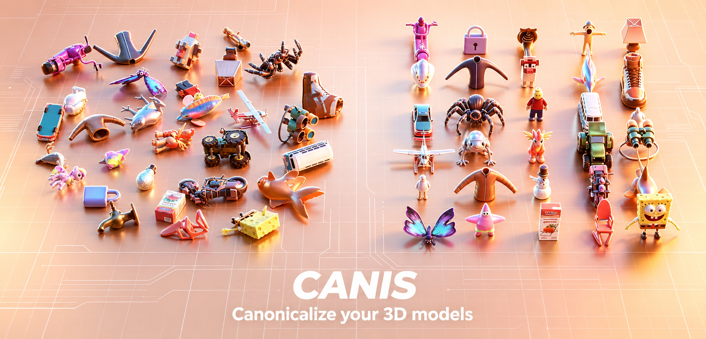
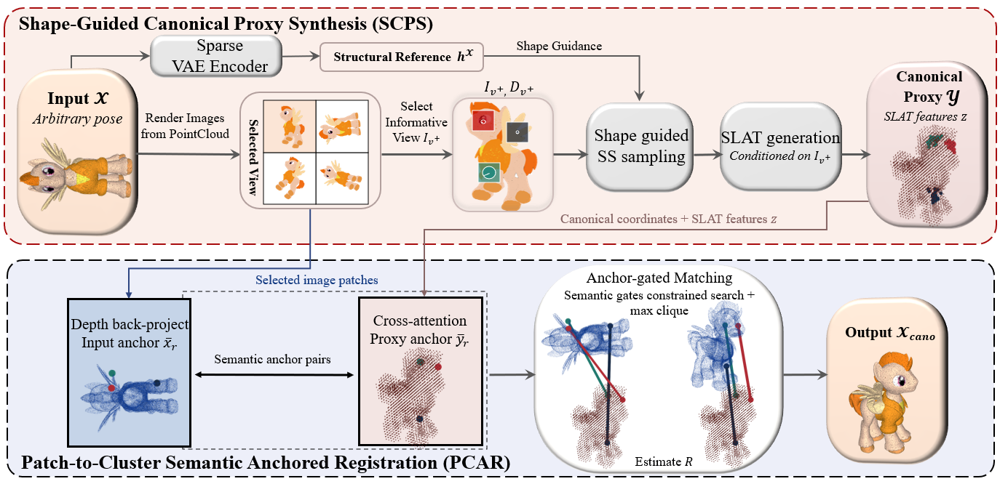

CANIS · Project Page
CANIS: Canonicalize Your 3D Models
Shape-guided canonicalization through semantic 2D–3D correspondence
A semantic, correspondence-driven framework for recovering a consistent canonical orientation from synthetic, real-world, and partial 3D observations.

Overview · Abstract
A canonical frame for the 3D world.
Canonical orientation is a quiet prerequisite for reliable 3D understanding: objects that mean the same thing should face the same way.
We present CANIS, a framework for canonicalizing 3D objects in arbitrary orientations. CANIS uses a shape-guided generative prior to synthesize a canonical proxy, then extracts semantic 2D–3D correspondences from cross-attention to align the input geometry with that proxy.
The resulting patch-to-cluster registration is category-agnostic and robust across diverse shapes, real-world scans, and partial observations. The same correspondences naturally support interpretable cross-model analysis.

Main results
From rotation to recognition.
Follow the semantic evidence from an anchored 2D observation through point-cloud registration to its corresponding render-norm 3D asset.
OmniObject3D · Real data
Real-world scans, canonically aligned.
CANIS transfers clean semantic orientation cues to noisy, textured real-world captures. Each group pairs four captured scans with their recovered canonical orientations.
Partial observations
Reasoning beyond what is visible.
Even when geometry is incomplete, the semantic proxy provides a stable frame for recovering the intended orientation across groups of challenging partial examples.
2D–3D correspondence
Following meaning across representations.
Paired views expose the semantic links learned by different reconstruction backbones. Select a model to inspect its 2D image patches and corresponding 3D regions.
TRELLIS-OA backbone
Image patch ↔ 3D anchor
The OA variant exposes patch-to-cluster bindings used by CANIS to construct semantically anchored 3D registration constraints.